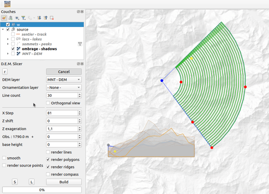
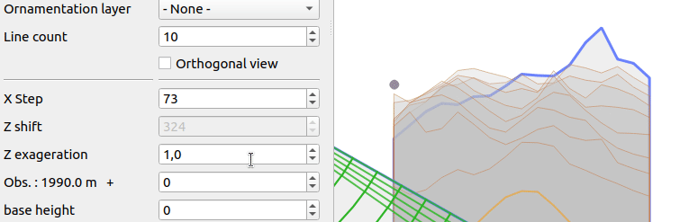

Il s'agit d'un outil simple de découpe (en tranches !) de MNT, pour dessiner de jolies cartes postales, pour les amoureux de reliefs.
Le principe est de construire une série de profils d'altitudes (sous forme de lignes ou de polygones), de les juxtaposer pour donner l'illusion d'une vue 3D. Ici, pas de calcul de l'indice de réfraction atmosphérique, pas de prise en compte de la courbure terrestre... juste un peu de géométrie, et les styles font le reste. Les couches résultantes sont positionnées où bon vous semble, le système de coordonnées utilisé est celui de la carte.
Les décalages (variés selon les paramètres retenus) en hauteur de chaque coupe simulent des vues parallèles ou 'perspective', une vision 'radiale' tente de se rapprocher de la vision que peut avoir un observateur.
Un calcul de 'ligne de crête' rehausse les reliefs.
Choix de la zone (utilisation des poignées), sélection de la couche qui porte les altitudes, ajustement de quelques paramètres et résultats :
Les coupes suivent alors des arcs de cercle d'iso-distance à l'observateur.

La couche de points choisie sera 'projetée' sur les coupes. Un attribut indique si le point ainsi projeté est visible (masqué ou non par une coupe). Le style par défaut utilise les champs 'nom', 'name' ou 'label' pour étiquetage. Une couche de ligne ou polygones sera découpée par les lignes de profils, chaque sommet replacé en altitude. Résultat souvent mal fichu et très gourmant en temps. Attention : annulation impossible, faire des tests sur petit jeu de données.
Attributs :
"num" - numéro de la ligne. Le zéro commençant au fond.
Attributs :
"num" - numéro du polygone. Le zéro commençant au fond.
Attributs :
"num" - numéro de la ligne.
"gaz" - nombre de profils que cette crête cache.
"prof" - 'profondeur' de la crête (0 = proche...)

Attributs (ajoutés aux attributs de la couche originale) :
"num" - numéro du point.
"z" - altitude calculée.
"depth" - distance à l'observateur
"visi" - visibilité dans la série de coupe (0 : masqué, 1 : visible)
Nombre de profils : c'est tout simplement le nombre de coupes générées.

Ecart entre deux mesures d'altitude : distance entre deux points, le long des profils.

Décalage des profils : décalage vertical des coupes. Rend plus visible les coupes qui sont en arrière plan. Effet 'vue aérienne'.
Accentuation du relief : Exagération du relief (multiplication).

Obs : Altitude de l'observateur par rapport au sol. Comme le 'décalage en z', influ sur le décalage vertical des coupes, en plus fidèle à la réalité.
Couleurs, transparence, texture... tout est possible avec QGis !
Les attributs que portent les géométries peuvent servir à ajuster les styles. Par exemple, l'épaisseur des lignes de crête peut varier selon le nombre de profils qui sont cachés par la crête (attribut 'gaz') :
scale_linear( coalesce( "gaz", maximum("gaz")/3) , 0, maximum("gaz"), 0.05, 0.8)

It is a simple cutting tool (in slices) of DEM data, to draw pretty postcards, for lovers of reliefs.
The principle is to build a series of altitude profiles (lines or polygons), to juxtapose them to give the illusion of a 3D view. Here, no calculation of the atmospheric refractive index, no consideration of the Earth's curvature ... just a little geometry, and the styles do the rest. The resulting layers are positioned where you want, the coordinate system used is that of the map (prefer 3857 rather than 4326 - in degrees -).
The offsets (varied according to the parameters chosen) in height of each cut simulate parallel or perspective views, a 'radial' vision attempts to get closer to the vision that an observer can have.
A 'ridge line' calculation enhances the reliefs.
Choice of the zone (use of the handles), selection of the layer which carries the altitudes, adjustment of some parameters and results :
The profiles then follow arcs of an iso-distance to the observer.
The selected point layer will be 'projected' on the profiles. An attribute indicates whether the point thus projected is visible (hidden or not by a section). The default style uses the fields 'name' or 'label' for labeling.
A line layer or polygons will be cut by the profile lines, each vertex replaced in altitude. Result often badly done and very time consuming. Please note: cancellation is not possible, test on small data set.
Attributes :
"num" - line number. Zero starting at the bottom.
Attributes :
"num" - polygone number.
Attributes :
"num" - line number.
"gaz" - number of profiles that this crest hides
"prof" - 'depth' of the ridge (0 = close...)
Attributes (added to the attributes of the original layer) :
"num" - point number.
"z" - calculated altitude.
"depth" - distance to observer
"visi" - visibility in the cutting series (0: hidden, 1: visible)
linecount : it is simply the number of profiles (sections) generated.
xStep : distance between two altitude measurements, along the profiles.
zShift : vertical offset of the profiles. Makes the cuts in the background more visible. 'Aerial view' effect.
zFactor : accentuation of the relief.
elevation : Altitude of the observer relative to the ground. Like 'zShift', influences the vertical offset of the sections, more faithful to reality.
Colors, transparency, texture ... everything is possible with QGis!
The attributes carried by the geometries can be used to adjust styles. For example, the thickness of the ridge lines can vary depending on the number of profiles that are hidden by the ridge (attribute 'gaz') :
scale_linear( coalesce( "gaz", maximum("gaz")/3) , 0, maximum("gaz"), 0.05, 0.8)